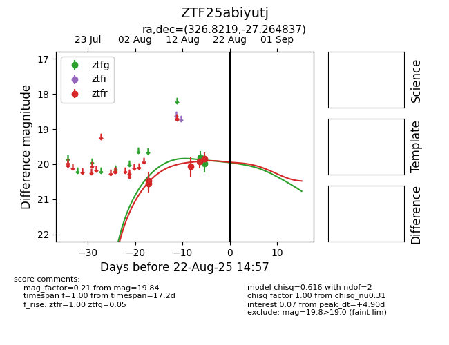

Target ZTF25abiyutj at 2025-08-22 15:21, see:
FINK: fink-portal.org/ZTF25abiyutj
Lasair: lasair-ztf.lsst.ac.uk/objects/ZTF25abiyutj
ALeRCE: alerce.online/object/ZTF25abiyutj
alt names
ZTF25abiyutj (ztf,alerce)
coordinates:
equatorial (ra, dec) = (326.8219,-27.26484)
galactic (l, b) = (21.7622,-49.29395)
photometry
last ztfg=19.98, ztfr=19.84
2 ztfg, 5 ztfr detections
